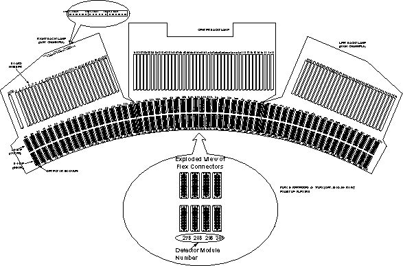

Operating Documentation
Direction 5181166-800, Rev# 7
BrightSpeed Select Service Methods Adv
Operating Documentation |
The backplane used on MDAS 16 is separated into three sections: Right, Center and Left. The three backplane boards are connected via a ribbon cable, with a 100-pin connector on each board.
Right Backplane
The Right backplane contains connectors for Converter boards 1 through 28. The pinout of these connectors is defined in “External Interface Pinouts” section, in MDAS 16 Pinouts, Jumpers, and LEDs.
FET LEDs are located on the Right Backplane (see “LEDs” in MDAS 16 Pinouts, Jumpers, and LEDs).
Center Backplane
The Center backplane contains connectors for converter boards 29 through 68. The pinout of these connectors is defined in “External Interface Pinouts” section, in MDAS 16 Pinouts, Jumpers, and LEDs.
Test Points are available on the Center Backplane to measure Power Supply voltages (see Table “Backplane Voltage Test Points” in MDAS 16 Pinouts, Jumpers, and LEDs).
Left Backplane
The Left backplane contains connectors for converter boards 69 through 96. The pinout of these connectors is defined in “External Interface Pinouts” section in MDAS 16 Pinouts, Jumpers, and LEDs.
The DAS backplanes have been subdivided into four sections each. Test points and load resistors have been added to protect the DAS backplanes from short circuit of the DVSS (-5v_a). This is the detector bias voltage which applies -5vdc to the FET switching array. This is not the FET Control lines circuitry. During normal system conditions the test points would read -5vdc referenced to DAS analog ground. Reference section Detector Bias Test Points -5v_A (DVSS) in MDAS 16 Pinouts, Jumpers, and LEDsfor details.
The DDIF is a pin and socket interface. Both the DAS backplane and Detector Flex leads are female pins. The “Interposer” is a male to male interface. Illustration 1 shows the design features of this interface. The BGA or female connector is also on the DAS backplane (not shown) minus the backshell. Illustration 2 shows the DAS Detector interface layout.
Illustration 1: DAS Detector Interface (DDIF)

The Interposer uses four (4) large ground pins as guides to center the device in the BGA connectors. There are 150 pins per interface and 114 interfaces total, 2 per detector module.
There are 128 data channels, 6 FET control lines, 9 analog grounds, 1 signal ground, 4 shield grounds, 1 Bias Voltage line and 1 unused pin. An analog isolation ground trace surrounds the Bias and FET control lines. This is to ensure that no leakage currents can occur resulting in random FET control settings. The shield grounds perform EMI isolation. The signal ground reduces stray current induction onto the data lines.
Illustration 2: Detector and MDAS 16 DDIF Layout
